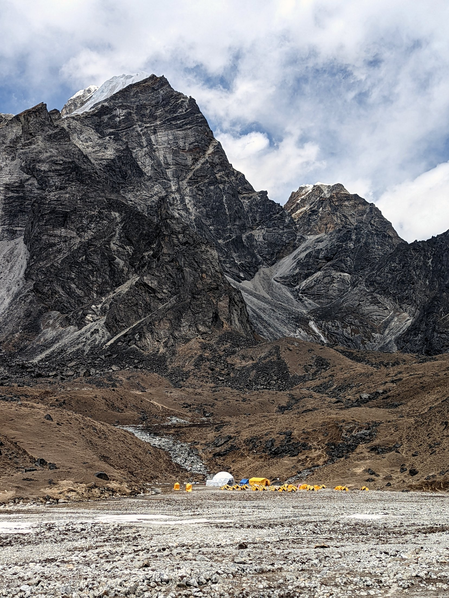
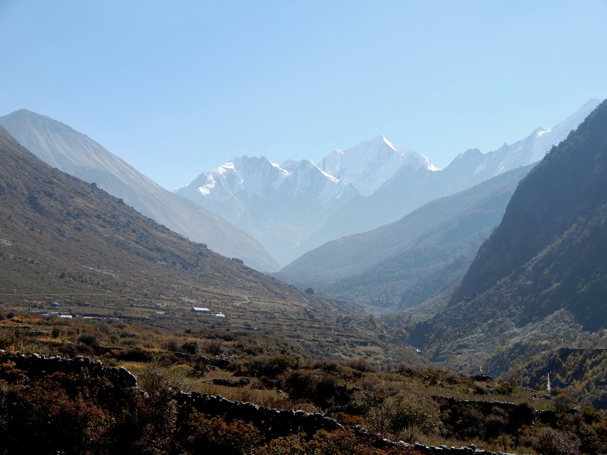

2012 / 2014 / 2015 — ELBRUS
Drei Jahre,
drei Wege.
2012 Normalroute · 2014 Nordseite · 2015 erneut am Elbrus.

EXPEDITIONEN · TREKKING · BEGEGNUNGEN
Seit über 30 Jahren in den Bergen —
seit 2012 als karitativer Verein
in Nepal und anderen Ländern der Welt.
1994 — HEIMAT BERGE
Mit Touren und Hochtouren hat alles begonnen — als Jugendlicher, 1994. Die Faszination für Berge, Natur und ferne Länder ist geblieben und prägt bis heute all unsere Reisen.


Nepal
„Irgendwann hört man auf,
Gast zu sein.“
Aus Reisen werden Freundschaften. Wir kennen die Menschen, ihre Familien und ihre Geschichten — und wir kommen immer wieder.
2012 — NEPAL
2012 führte die Tour mit Ngima Grimen Sherpa (selig) zum Singu Chuli, 6501 m. Aus dieser Reise entstand HÖHENBERGSTEIGEN als karitativer Verein.

2012 / 2014 / 2015 — ELBRUS
2012 Normalroute · 2014 Nordseite · 2015 erneut am Elbrus.
2013 & 2017 — YAU PA, 6422 M
2013 erster Erstbesteigungsversuch. 2017 die Rückkehr — neue Erfahrungen, derselbe Berg.
2014 — NANGAMARI 1, 6547 M
Erstbesteigung durch Remo D., David B. und Hira Gurung. Geplant und durchgeführt durch uns.

2016 — MUSTANG, NEPAL
Bike-Projekt „Längster Downhill“ — geplant, aber nicht durchgeführt. Auch nicht verwirklichte Projekte gehören zur Geschichte.

FRÜHLING 2018 — KAMTSCHATKA
Skitouren zwischen Vulkanen. Weite, Einsamkeit und eine Landschaft, die lange bleibt.

HERBST 2018 — LANGTANG
Bergwelt, Dörfer und Begegnungen im Langtang.

2019 — LANGTANG & CHITWAN
Langtang und Chitwan Nationalpark — Nepal in ganz unterschiedlichen Facetten.

2020 — PAKISTAN
Grosse Berge, grosse Herausforderungen. Expeditionen bedeuten für uns Teamgeist, Respekt und Demut.
2023 — KIRGISTAN
Expedition zum Pik Lenin. Grosse Höhen, anspruchsvolle Bedingungen und ein eindrückendes Teamerlebnis.
2024 — NEPAL
Wieder Nepal. Wieder unterwegs. Und noch lange nicht am Ende der Linie.
MENSCHEN & PROJEKTE
Die Gewinne aus unseren Reisen fliessen in konkrete Projekte vor Ort — zum Beispiel in Bildung, Gesundheit und nachhaltige Entwicklung. So entstehen echte Perspektiven.
MEHR ÜBER UNSERE WIRKUNG →

Graubünden → Nepal → Kamtschatka → Pakistan → ???
Erzähl uns, was du suchst.
Gemeinsam finden wir den richtigen Weg.